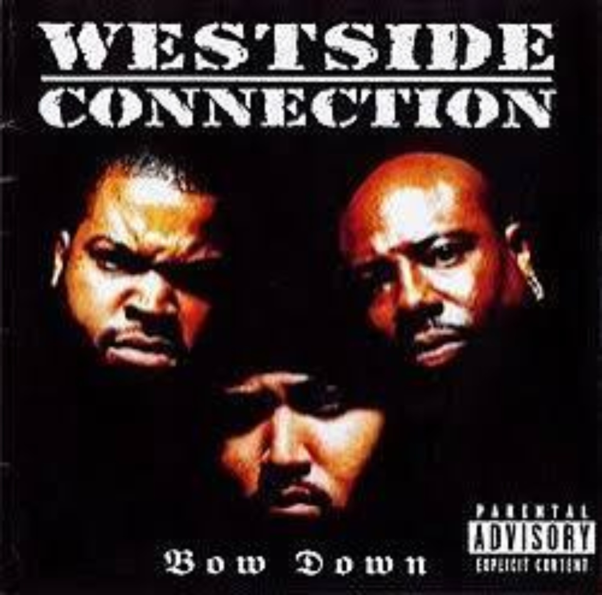
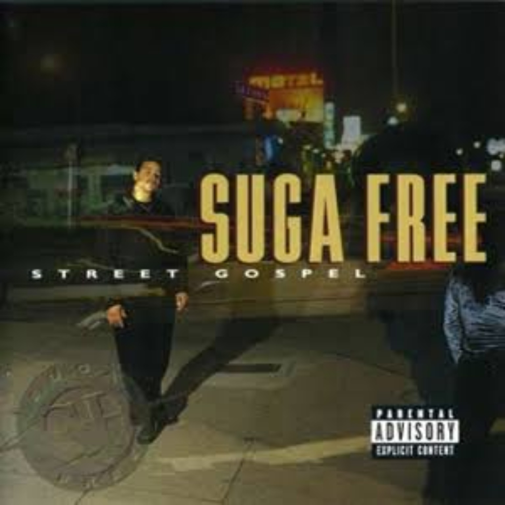
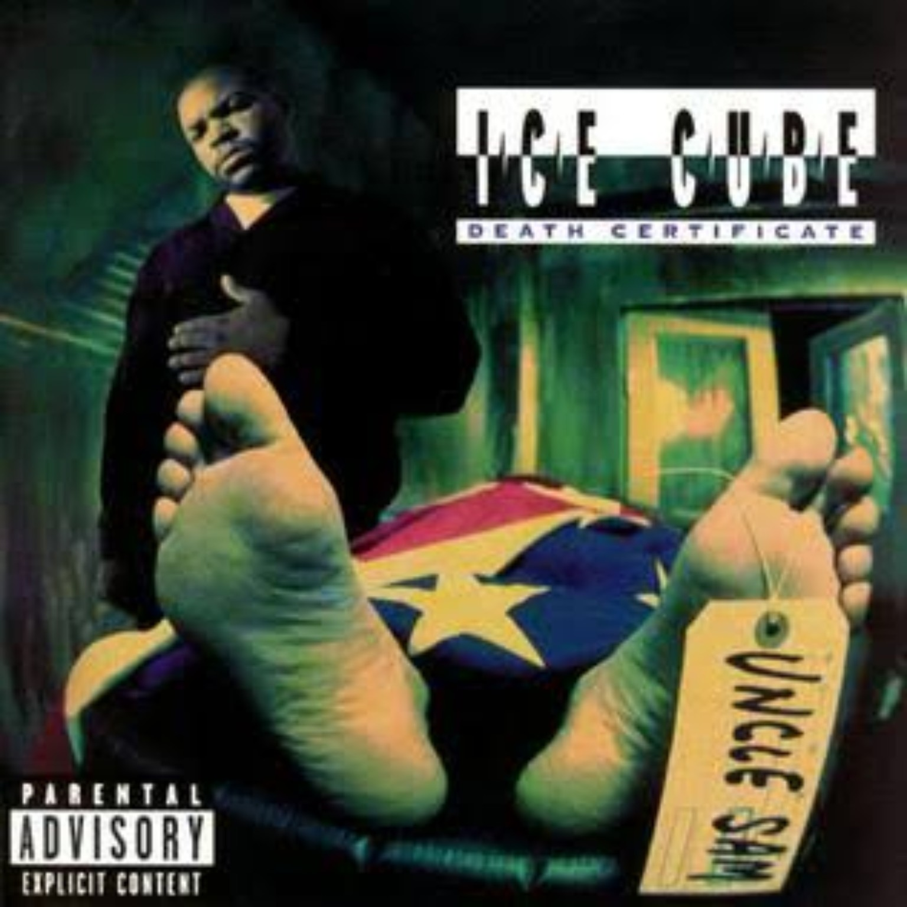
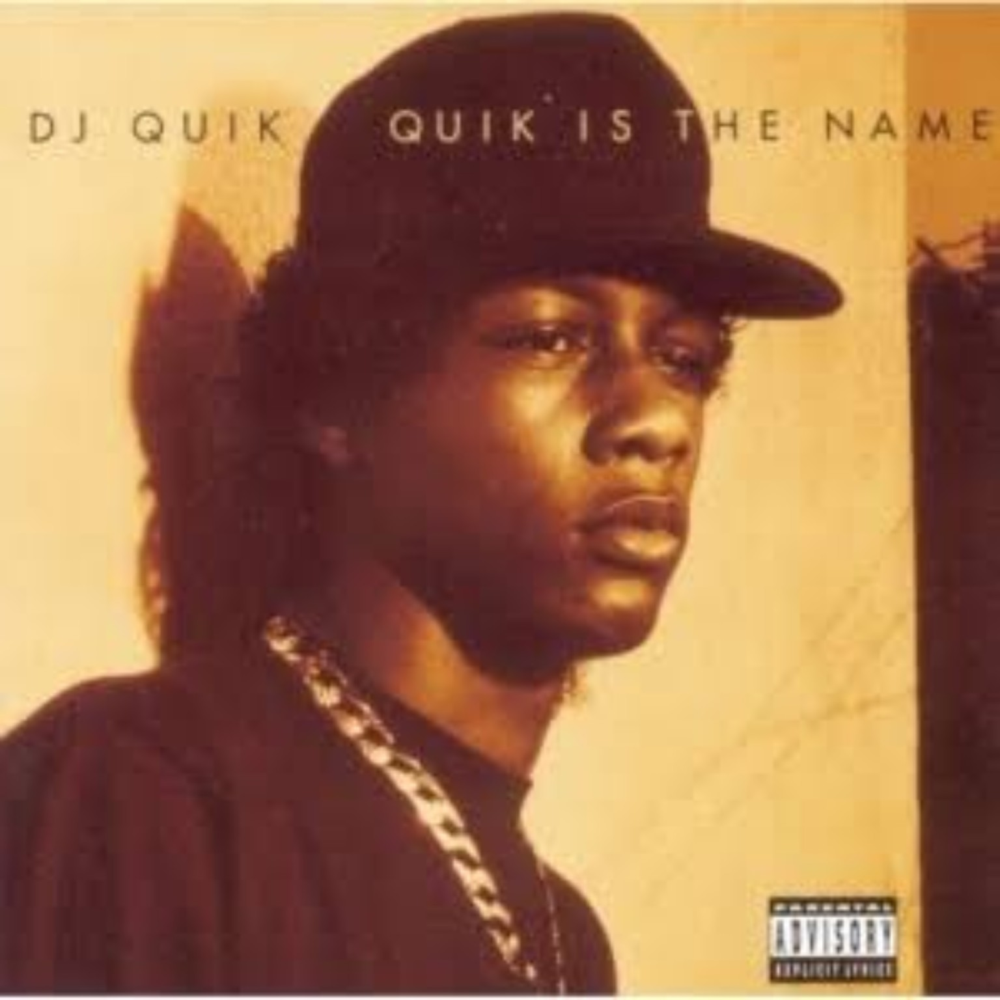
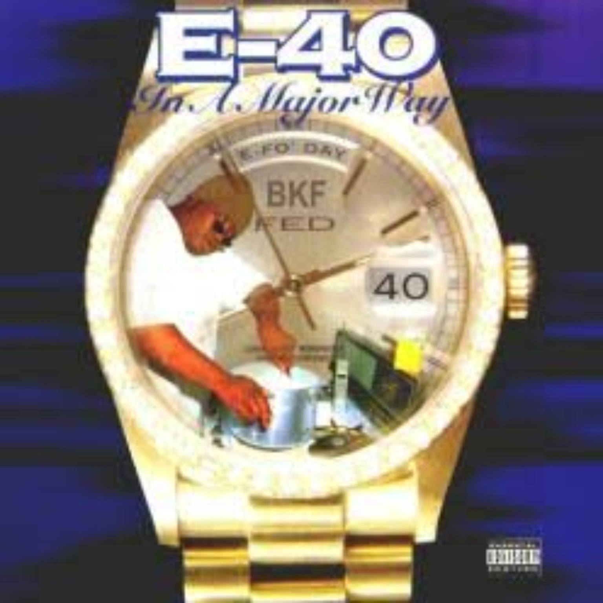
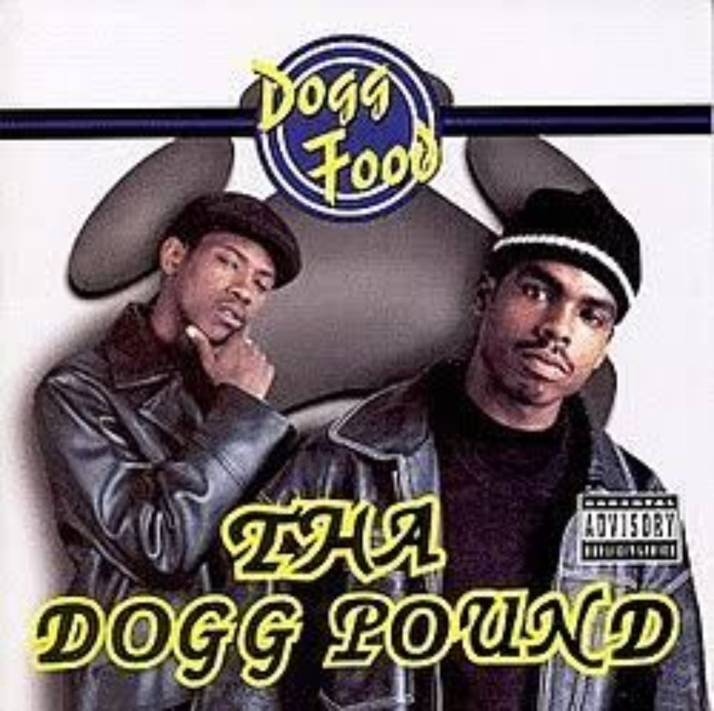
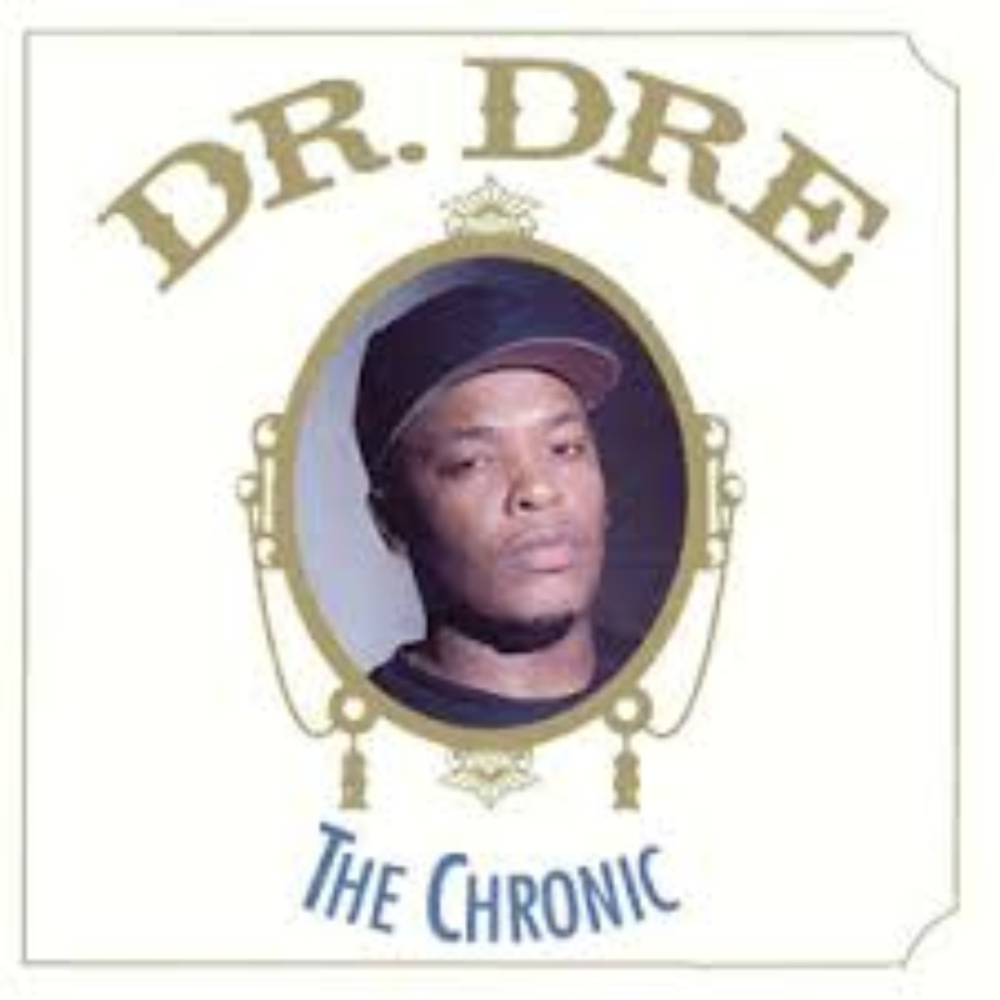
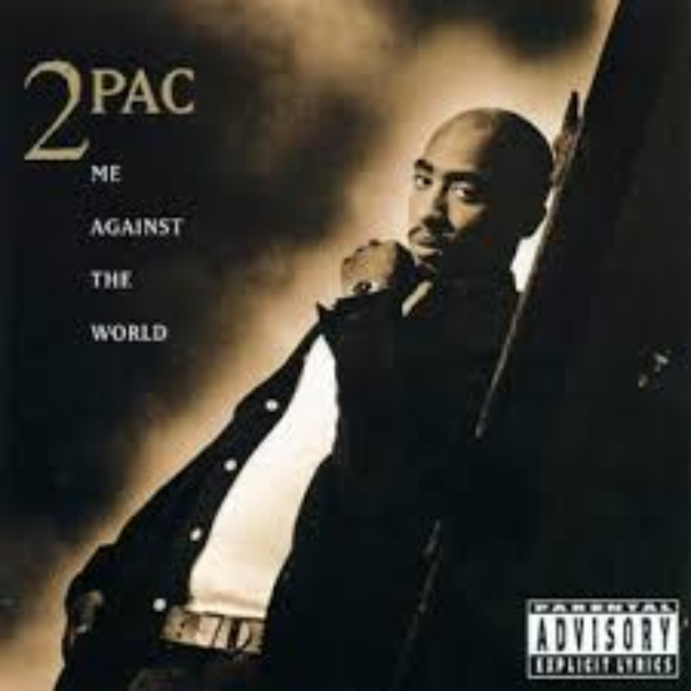

This one might have been even harder than the rapper list.
West Coast hip-hop has too many different versions of greatness to judge by one formula. Some albums changed the sound of rap. Some became regional scriptures. Some gave us timeless singles. Some were technical masterpieces. Some captured a city so perfectly that you can hear the neighborhood in the drums.
Full-album quality. Replay value. Production. Songwriting. Influence. Impact. Peak. How well the project represents its era — and how much it still matters now.
Landmark mixtapes were eligible when the music and cultural impact were too important to ignore. That is why a project like Crenshaw can stand next to traditional studio albums.
Album covers load from Apple’s public music catalog when available. Metadata below reflects the original release era and primary label(s), not later reissues.
We started with more than 100 projects, cut it to 50, then 35, then 25. Now let’s argue.

Bow Down
The final spot goes to one of the most unapologetically West Coast albums on the list. Ice Cube, Mack 10 and WC came together as Westside Connection and made a project that felt like a regional statement at a moment when East-vs.-West tension was part of the national rap conversation. The title track set the tone immediately: aggressive, territorial and built around three distinct voices.
Bow Down does not have the same front-to-back depth or historical reach as the albums above it, but the chemistry, attitude and L.A. identity are undeniable. It is the kind of record that makes sense as No. 25 because even at the bottom of the ranking, you are still dealing with something that sounds like a certified West Coast staple.
Crenshaw
Crenshaw is technically a mixtape, but leaving it out because of format would miss the point of what the project meant. Nip used the music and the $100 Proud 2 Pay strategy to make a statement about value, ownership and direct connection with supporters. That business idea got headlines, but the project lasted because the songs actually carried the message.
Musically, this was Nip deep in his early-2010s L.A. run: confident, independent and increasingly clear about the Marathon philosophy that would later become inseparable from his legacy. It helped bridge the mixtape era into the artist Nip became on Victory Lap. For 4DK, its influence on modern independent rap culture earns it a Top-25 spot.

Street Gospel
Few debut albums feel this completely tied to one voice. Suga Free’s cadence, jokes, pimp talk and conversational timing were so unusual that the album could only belong to him. DJ Quik’s production gave that personality the perfect musical setting: funky, clean and loose enough for Suga Free to bend sentences around the beat.
Street Gospel never became a giant crossover album, but its regional life has been enormous. Records from it still get played, quoted and rediscovered, and younger West Coast rappers continue to borrow from the slick talk and rhythmic freedom. This is exactly the kind of cult classic an all-time regional list should protect from being forgotten.
93 ’til Infinity
West Coast history gets flattened when people pretend the region was only gangsta rap and G-funk. 93 ’til Infinity is one of the strongest arguments against that lazy version of the story. Souls of Mischief brought intricate internal rhymes, jazzier production and a loose, youthful energy that represented the Hieroglyphics side of Oakland.
The title track became immortal, but the album’s importance is bigger than one song. It offered a lyrical, alternative Bay Area path at the exact moment when Death Row was becoming the dominant image of the West. That contrast is part of why we wanted it in the Top 25. It gives the list a fuller picture of what West Coast rap actually was.
Life Is...Too Short
Too $hort’s influence on Bay Area rap is bigger than any one album, but Life Is...Too Short is the cleanest early document of why he mattered. The bass-heavy production, conversational pimp talk, humor and independent mentality gave Oakland a lane that did not sound like Los Angeles. Short proved a rapper could build regional power by speaking directly to a local audience and letting the culture spread outward.
That formula became part of the Bay’s DNA. Generations of artists inherited pieces of the slang, business approach and game-talk. The album sits at No. 21 because the records above it became larger national landmarks, but the foundation here is undeniable.
Oxymoron
Oxymoron was the project that pushed Q from respected TDE favorite into a much bigger national lane. He kept the darkness, unpredictability and gangsta-rap edge that made his earlier work interesting, but the album also had records big enough to live on radio, at festivals and in clubs. That balance is difficult, and Q made it feel natural.
The album also represents the depth of the early-2010s TDE run. Kendrick was not the only artist coming out of that camp with a distinct voice and a real album identity. Q could be menacing, funny, reflective and catchy without smoothing off the weird edges. Blank Face LP may be the more adventurous project, but Oxymoron had the bigger West Coast moment.

Death Certificate
This is Cube at his most confrontational. Death Certificate is angry, political, street-level and intentionally uncomfortable, with some material that still sparks debate decades later. What keeps the album important is the force of the writing. Cube was operating like a rapper who believed every song needed to make a point, whether the subject was race, hypocrisy, neighborhood life or his former group.
And then there is “No Vaseline,” one of the most famous diss records in rap history. The album’s sharpness, controversy and social commentary made it one of the defining documents of early-’90s West Coast rap. It lands at No. 19 because this list gets unbelievably deep, not because the project lacks classic weight.

Quik Is the Name
Quik’s debut introduced the full package immediately: rapper, producer, musician, personality and one of the architects of a smoother branch of the Compton sound. The drums knocked, the bass moved, the funk was obvious and Quik already had the ability to make something street one minute and something built for a party the next.
That range became one of the defining traits of his career, but Quik Is the Name is where the blueprint first became clear to a national audience. “Tonite” remains timeless, and the album helped establish Quik as a producer whose influence would eventually stretch far beyond his own records. Safe + Sound may be more polished, but for an all-time West Coast list, the historical weight of the debut wins.
Doctor’s Advocate
The sophomore album mattered because Game had to prove the debut was not just the product of a perfect machine around him. By the time Doctor’s Advocate arrived, the G-Unit relationship had collapsed and Dr. Dre was not producing the record. That put the pressure directly on Game — and he answered with another strong, deeply West Coast album.
The title track gave the project an emotional center, while “One Blood” showed he could still make a large-scale street anthem. Game’s references, voice and love for rap history were everywhere, but the record did not feel like a copy of The Documentary. It felt like somebody trying to prove that his place in the genre belonged to him. That successful second-album test is a huge part of why Game ranks so high in 4DK’s West Coast conversations.

In a Major Way
Before the hyphy-era second wind, In a Major Way was the album that made the rest of the country pay closer attention to E-40. His flow did not resemble anybody else’s, the slang felt like its own language and the production captured a Bay Area identity that did not need to copy Los Angeles to sound West Coast.
That independence is a major part of the album’s legacy. 40 and Sick Wid It helped build a regional business model and aesthetic that valued local loyalty before national approval. The album also showed how flexible his voice could be: funny, slick, technical, conversational and street all at once. At No. 16, this is one of the foundational Bay Area albums on the list and the first major proof that E-40’s weirdness was actually the advantage.
The Don Killuminati: The 7 Day Theory
Pac’s Makaveli album sounds like urgency turned into music. It is darker and rougher around the edges than All Eyez on Me, and that lack of polish is part of the appeal. Pac sounds paranoid, combative, reflective and completely consumed by the environment around him. The stripped-down production leaves more room for the voice, and the record often feels like a document made by somebody who believed time was running out.
The mythology around the album grew because it arrived after Pac’s death, but the music does not need conspiracy theories to work. “Hail Mary” became one of his most enduring records, while “To Live & Die in L.A.” gave the album one of its clearest West Coast statements. It is not our highest Pac album, but it is absolutely part of the classic conversation.

Dogg Food
Dogg Food is one of the hardest pure Death Row albums, and it is a major part of why Kurupt’s reputation as an MC still carries so much weight. Daz provided the production backbone and chemistry, while Kurupt regularly sounded like he was trying to out-rap everybody in the room. The project has G-funk groove, gangsta-rap aggression and enough technical rapping to keep it from blending into the label’s bigger superstar releases.
What 4DK loves about this album is that it never feels like a side project. Tha Dogg Pound had its own identity even while living inside the same ecosystem as Dre, Snoop and Pac. The bars were sharper, the energy was nastier and the chemistry was real. It is a certified mid-’90s West Coast staple.
My Krazy Life
My Krazy Life captured a specific L.A. moment so well that it already feels like a period piece in the best way. YG and DJ Mustard had a sound that was immediately recognizable: spare drums, sharp bass, simple melodic ideas and enough space for YG’s voice and stories to carry the record. But the album worked because it was more than a collection of Mustard singles.
The sequencing gave the project a narrative shape, moving through neighborhood politics, relationships, consequences and daily life. YG sounded local without being inaccessible, and the album helped push the early-2010s L.A. sound nationally. At No. 13, it ranks as one of 4DK’s strongest modern West Coast albums because it did what classic regional records do: it made outsiders feel like they were hearing a city from the inside.
My Ghetto Report Card
This album is one of the best examples of why E-40’s longevity is so ridiculous. More than a decade after In a Major Way, 40 found another national moment without sounding like an older rapper trying to impersonate the new generation. Instead, he connected his own Bay Area vocabulary and off-kilter flow with the hyphy movement and Lil Jon’s crunk energy.
“Tell Me When to Go” became a national doorway into a sound and culture the Bay had already been building, while the rest of the album reminded listeners that 40 could adapt without losing identity. That matters to 4DK. Reinvention is one thing; reinvention while remaining unmistakably yourself is harder. My Ghetto Report Card gave 40 a second major peak and helped put hyphy into mainstream rap conversation.
AmeriKKKa’s Most Wanted
Leaving N.W.A could have exposed Cube. Instead, his solo debut made the opposite argument: the pen was real, the personality was big enough to carry a whole album, and he did not need to copy the exact sound that made his old group famous. Working heavily with the Bomb Squad gave the record a dense, aggressive production style that connected West Coast perspective with an East Coast wall of sound.
The album helped establish Cube as one of the elite solo rappers of his generation and showed that his voice inside N.W.A had been more than one part of a group chemistry. It was political, confrontational, funny and ugly in ways that made people argue about it immediately. At No. 11, it barely misses the Top 10, but its importance to the rise of the solo West Coast superstar is unquestioned.
good kid, m.A.A.d city
good kid, m.A.A.d city is where Kendrick became a major star without flattening the details that made his writing special. Compton is not just scenery — it is a character. Family, friends, pressure, temptation, violence, faith and adolescence all move through the album like scenes in a film. The voicemails and sequencing give the story structure, but the records still work outside the concept.
That last part is important. A concept album can be impressive and still feel like homework. GKMC has “Money Trees,” “m.A.A.d city,” “Bitch, Don’t Kill My Vibe” and records that became part of everyday rap culture. It was cinematic and replayable at the same time. The reason it lands at No. 10 rather than higher is not weakness — it is the absurd strength of the nine albums ahead of it.
The Documentary
When The Documentary arrived, the West Coast had not disappeared — but it had been a while since a new L.A. rapper felt this central to mainstream hip-hop. Game came in with Dre production, G-Unit momentum, major features and the hunger of somebody who knew he had one chance to make the moment count. The result felt like a revival without becoming a retro album.
Game’s biggest strength was that he was a student of hip-hop. He could reference the history, rap next to East Coast stars, make radio records and still sound like Compton. The album’s singles were huge, but the deeper cuts kept the project from becoming a greatest-hits collection disguised as a debut. For 4DK, this remains the defining Game album and one of the strongest rap debuts of the 2000s.
Victory Lap
Victory Lap felt like the payoff to years of Nipsey building outside the traditional major-label path. The mixtapes, Proud 2 Pay strategy, Marathon mentality, ownership talk and L.A. street credibility all arrived here in a polished album that still sounded completely like Nip. The production was bigger, the features were bigger, but the message did not change.
That balance matters. Nip finally had a project that could reach the larger rap audience without sacrificing the independence-first identity that made people follow him in the first place. After his death, the album became even more emotionally significant, but we do not rank it this high because of tragedy. We rank it here because the music already showed where he was going: sharper songwriting, broader reach and real superstar potential. It is one of the defining modern West Coast albums.
Straight Outta Compton
There is no serious history of West Coast hip-hop without this album. N.W.A made Compton part of the national vocabulary and forced mainstream America to confront a version of Los Angeles that was very different from Hollywood. Ice Cube’s writing, Dr. Dre and DJ Yella’s production, Eazy-E’s presence and the group’s confrontational energy created a project that felt dangerous because it sounded like nobody was asking permission.
Straight Outta Compton sits at No. 7 because this ranking is not only about historical importance. We are also weighing replay value, full-album quality, production, influence and what still hits today. But as a cultural turning point? It is almost impossible to rank. The album changed how the country viewed West Coast rap and helped establish gangsta rap as a dominant force.

The Chronic
The Chronic is one of the records where influence becomes bigger than the album itself. Dre’s production helped codify G-funk for a national audience: deep bass, bright synths, P-Funk DNA, slow-rolling drums and enough open space for rappers to sound conversational over enormous grooves. It also gave Snoop a major launching pad before Doggystyle arrived.
The album helped shift the center of mainstream rap toward Los Angeles and Death Row, and its production language echoed through the rest of the decade. There are albums above it that 4DK reaches for more often front-to-back, but very few West Coast projects changed the sound of rap as dramatically. If the list were based purely on historical influence, The Chronic could easily be even higher.

Me Against the World
This is the key distinction in our Pac debate: 4DK thinks Me Against the World may be his best album. It is focused, vulnerable and emotionally heavy in a way few superstar rap records have ever been. Pac sounds reflective without losing edge, and the album lets him talk about fear, family, mortality, isolation and survival without turning those subjects into slogans.
So why is it No. 5 instead of No. 1? Because this is specifically a West Coast all-time list. All Eyez on Me is more directly tied to the Death Row era, California sound and larger West Coast mythology. Me Against the World wins the “best Pac album” argument for us on many days; All Eyez wins the “most important Pac album to this specific ranking” argument. That is a small but important difference.
2001
By 1999, Dre did not need to prove he was important. He needed to prove he could still control the sound. 2001 answered that immediately. The production was darker, cleaner, heavier and more cinematic than his early-’90s work, and the record never felt like a nostalgia exercise. Dre surrounded himself with Snoop, Eminem, Xzibit, Kurupt, Nate Dogg, Hittman and a deep supporting cast, then built one of the most polished rap albums ever engineered.
The importance of 2001 is also regional. It helped reset mainstream expectations for West Coast production at the turn of the century and carried that sound directly into a new era. The drums, piano lines and mixing became reference points for producers everywhere. It is one of the rare comeback albums that did not merely remind people who Dre was — it created another generation of artists trying to sound like him.
To Pimp a Butterfly
Kendrick’s most ambitious album lands at No. 3 because it expanded the idea of what a major West Coast rap record could be. Jazz, funk, spoken word, live instrumentation, politics, fame, survivor’s guilt, Black identity and personal conflict all live inside the same project. It is dense without feeling like Kendrick abandoned rhythm, and experimental without disconnecting from the musical traditions that helped build West Coast rap in the first place.
To Pimp a Butterfly is not the most stereotypically “West Coast” album on this list, and that is part of why it matters. Kendrick took Compton perspective, Black musical history and a superstar platform and made something that did not sound like anybody else’s blockbuster rap album. It belongs in masterpiece territory. The two albums ahead of it simply have an even more direct relationship with the classic sound and mythology of the West.
Doggystyle
Doggystyle could have been No. 1 and nobody at 4DK would have called the argument crazy. Snoop arrived with a voice, flow and charisma that were instantly recognizable, while Dr. Dre’s production made G-funk feel like the center of the universe. The album did more than launch a superstar — it helped set the standard for what a West Coast rap album could sound like when everything clicked at once: personality, hooks, groove, street edge and replay value.
More than three decades later, it still does not feel like a museum piece. The records move. The sequencing works. Snoop sounds effortless. Its impact on L.A. rap, G-funk and Snoop’s worldwide identity is almost impossible to overstate. This and All Eyez on Me are 1A and 1B: two certified Death Row classics that helped define California hip-hop forever.
All Eyez on Me
For this list, All Eyez on Me gets the slightest edge over Doggystyle because of the scale of the statement and how much of it still lives in West Coast rap culture. Pac had just come home, joined Death Row and sounded like he wanted to make up for lost time in one shot. The album is massive, but the size works because Pac could move from aggression to celebration, paranoia, romance and street records without losing momentum. It gave the West anthems, radio records, deep cuts and the sound of Pac at the absolute height of his powers.
We still think Me Against the World may be Pac’s best album artistically. But on a ranking built specifically around West Coast impact, All Eyez on Me is the one. It is Death Row mythology, California identity and one of rap’s defining double-album moments rolled into the same project. For 4DK, this is 1A — with Doggystyle right there at 1B.
HONORABLE MENTIONS
No throwaway names. These are the projects that made the cuts hurt.
Section.80
The project that made a lot of listeners realize Kendrick was more than another promising L.A. rapper. The concepts, writing and TDE identity were already there; the major-label leap was still ahead.
Safe + Sound
One of Quik’s most polished ’90s albums and a painful final cut. The musicianship, funk and battle edge make this an easy honorable mention.
Blank Face LP
Arguably Q’s most adventurous album. Dark, weird, detailed and less concerned with chasing the crossover moment that Oxymoron had already given him.
The Predator
A monster early-’90s Cube album with two of his most enduring records. Missing the Top 25 says more about the depth of this list than the quality of the project.
Regulate... G Funk Era
A defining Long Beach G-funk project and one of the hardest cuts we made. “Regulate” alone guarantees its permanent place in West Coast history.
Rhythm-al-ism
Quik’s musicianship was fully developed here. Smooth, funky and technically sharp — the kind of album that makes his catalog so difficult to rank.
GNX
A late-career-in-the-making West Coast statement that arrived with huge momentum. It was simply too new to jump decades of established classics in this particular ranking.
Tha Hall of Game
Another deep Bay Area entry from 40’s prime. The catalog is the reason he had multiple albums survive so deep into our cuts.
Blue Lips
A mature, textured Q album that proved his late-career artistic growth is real. Like GNX, time was the biggest thing working against it.
187 He Wrote
Dark Bay Area gangsta rap at a high level. Spice 1’s voice, menace and storytelling give the project lasting regional weight.
Soul on Ice
A lyricist’s album through and through. “Nature of the Threat” remains one of the most discussed records in Ras Kass’ catalog, and the writing still separates him from the pack.
Control System
One of the strongest TDE projects from the crew’s rise. Soul’s dense writing and willingness to go conceptual gave the label another completely different voice.
Restless
The album that best captures Xzibit’s mainstream peak: Dre-era production muscle, a huge voice, real bars and enough crossover power to make him a national star.
From the Westside With Love II
A cornerstone of Dom’s early-2010s L.A. run. Laid-back, conversational and hugely influential on the city’s blog-era sound.
Mr. Morale & the Big Steppers
Kendrick’s most inward-looking major album. It does not have the same immediate West Coast imprint as GKMC, but the writing and ambition demand respect.
Mailbox Money
Another important chapter in Nip’s independent run. The music kept improving while the business model kept becoming part of the story.
Habits & Contradictions
Rawer than the albums that followed and still a fan favorite. This is the bridge between Q’s early promise and the major breakout of Oxymoron.
Below the Heavens
A deeply respected L.A. underground classic. Blu’s writing and Exile’s production created an album whose reputation grew steadily long after release.
Strictly 4 My N.I.G.G.A.Z...
Pac was still becoming the complete artist here, but the album already contained records that would become essential parts of his legacy.
We Come Strapped
Compton street rap with a voice you could recognize in seconds. Eiht’s cool, conversational menace is the whole atmosphere.
AmeriKKKa’s Nightmare
Another reminder of how deep the Bay’s ’90s bench was. The album kept Spice 1’s dark street storytelling and unmistakable delivery intact.
The Element of Surprise
A sprawling late-’90s 40 project that shows just how much material he was producing during his first major run.
Tha Last Meal
A strong post-Death Row Snoop album that proved he could rebuild his musical identity after one of rap’s most famous label eras.
Big Fish Theory
One of the most adventurous modern West Coast rap albums. Electronic production and Vince’s dry writing made it sound unlike almost anything else in his lane.
The Great Escape
A smooth, grown West Coast record built on chemistry rather than spectacle. Larry’s calm presence over Alchemist production gave the project immediate replay value.
THE WEST NEVER HAD ONE CLASSIC FORMULA.
All Eyez on Me and Doggystyle are 1A and 1B for us. One wins by the smallest edge because of sheer scale and lasting impact; the other set a standard for West Coast sound, charisma and album-making that still feels impossible to duplicate.
But the real story is everything underneath them: Oakland and Compton. Death Row and TDE. G-funk and underground lyricism. Hyphy and blog-era L.A. Independent tapes and blockbuster debuts.
That depth is why cutting more than 100 projects down to 25 was damn near disrespectful.